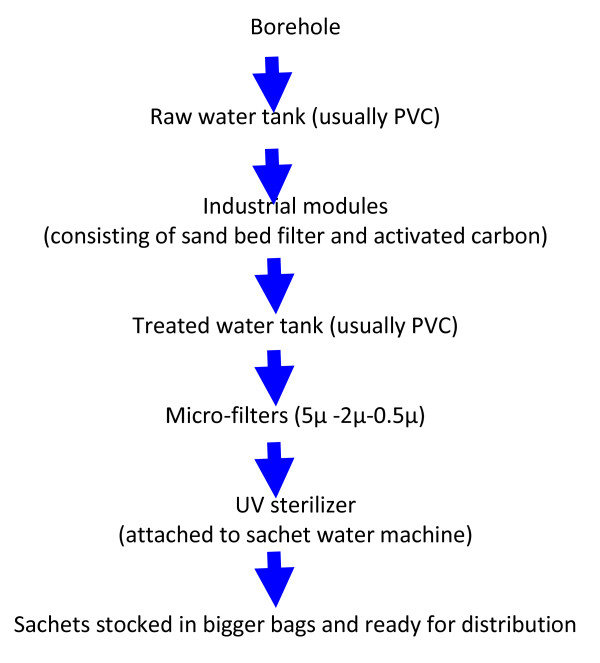

Water treatment steps
Coagulation:
Coagulation is often the first step in water treatment. During coagulation, chemicals with a positive charge are added to the water. The positive charge neutralizes the negative charge of dirt and other dissolved particles in the water. When this occurs, the particles bind with the chemicals to form slightly larger particles. Common chemicals used in this step include specific types of salts, aluminum, or iron.
Flocculation:
Flocculation follows the coagulation step. Flocculation is the gentle mixing of the water to form larger, heavier particles called flocs. Often, water treatment plants will add additional chemicals during this step to help the flocs form
Sedimentation :
Sedimentation is one of the steps water treatment plants use to separate out solids from the water. During sedimentation, flocs settle to the bottom of the water because they are heavier than water.
Filtration:
Once the flocs have settled to the bottom of the water, the clear water on top is filtered to separate additional solids from the water. During filtration, the clear water passes through filters that have different pore sizes and are made of different materials (such as sand, gravel, and charcoal). These filters remove dissolved particles and germs, such as dust, chemicals, parasites, bacteria, and viruses. Activated carbon filters also remove any bad odors. Water treatment plants can use a process called ultrafiltration in addition to or instead of traditional filtration. During ultrafiltration, the water goes through a filter membrane with very small pores. This filter only lets through water and other small molecules (such as salts and tiny, charged molecules). Reverse osmosis external icon is another filtration method that removes additional particles from water. Water treatment plants often use reverse osmosis when treating recycled waterexternal icon (also called reused water) or salt water for drinking.
Disinfection:
After the water has been filtered, water treatment plants may add one or more chemical disinfectants (such as chlorine or chlorine dioxide to kill any remaining parasites, bacteria, or viruses. To help keep water safe as it travels to homes and businesses, water treatment plants will make sure the water has low levels of the chemical disinfectant when it leaves the treatment plant. This remaining disinfectant kills germs living in the pipes between the water treatment plant and your tap. The Process Laboratory The water treatment plant has a process laboratory to ensure that the water treatment processes are optimized and that the water is safe to drink. The water is tested daily for numerous parameters by our water plant operators and by continuous on-line monitoring by process instrumentation. Some of the water quality parameters monitored and tested for are chlorine, turbidity, alkalinity, hardness, dissolved oxygen, conductivity, and pH.
Happy Lomas sarchet water treatment process
And we have a clean water that is alkaline nutural